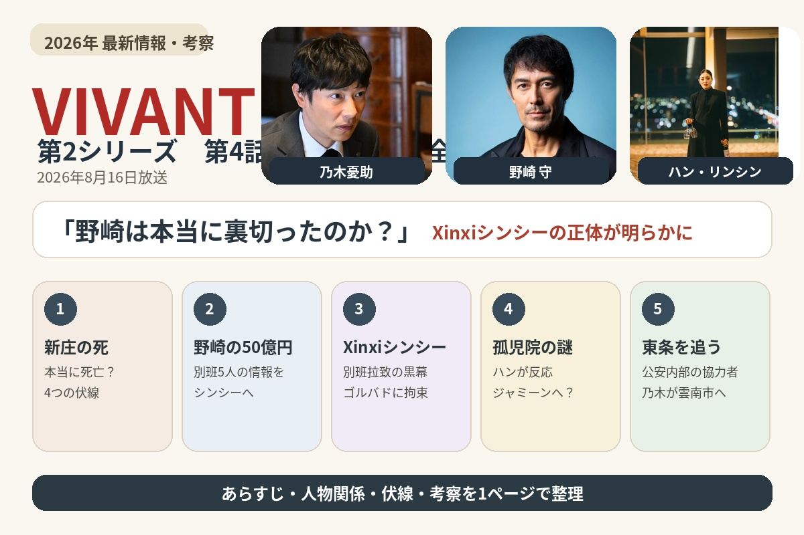
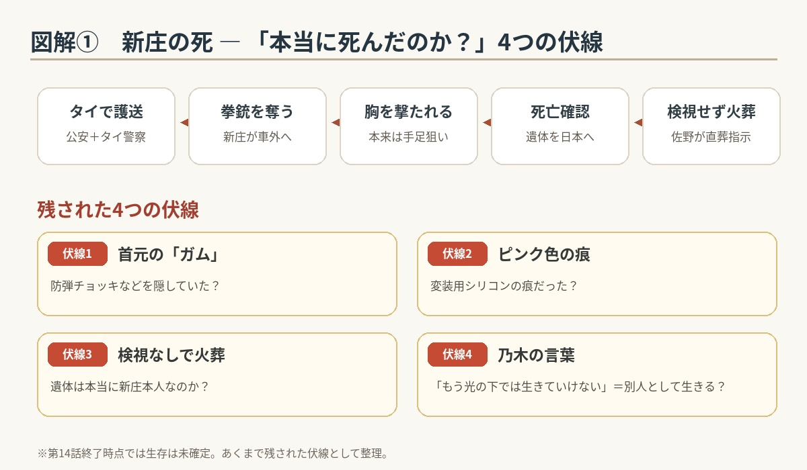
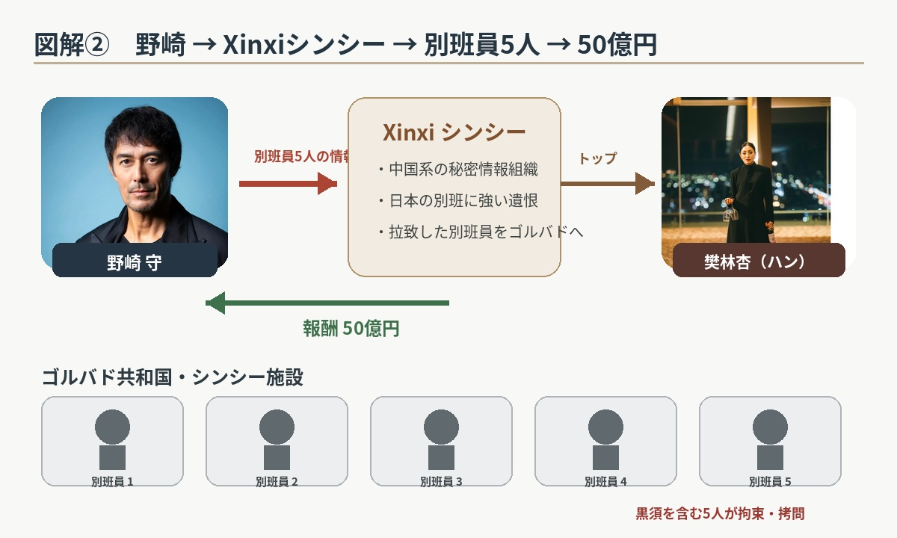
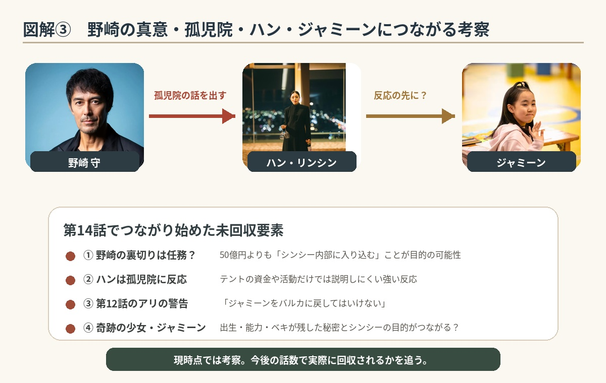

野崎は本当に別班を裏切ったのか？
新庄の死とXinxiシンシーの正体
第13話で浮上した「野崎の裏切り」は、単なる裏切りではない可能性を見せ始めます。新庄には衝撃的な結末が訪れ、野崎は中国系の秘密組織Xinxiシンシーへ。一方、乃木は公安内部に残る協力者を追い、東条へたどり着きます。

1. 野崎守の裏切りに、乃木たちは言葉を失う
第13話の最後。乃木憂助が最も信頼していた公安の野崎が、別班員5人の情報を海外へ流していたことが判明した。
乃木にとっては、かなりショックな事実だった。第1シリーズでは、乃木憂助と野崎は何度も対立しながら、最後には互いを認め合う関係になっていた。
それだけに、「野崎が別班を売った」という事実は、乃木憂助だけでなく櫻井やドラムにとっても簡単には受け入れられない。
しかし、この段階ではまだ、野崎が本当に金のために別班を裏切ったのか？という疑問が残っていた。
2. 新庄浩太郎は「別班を売った犯人」ではなかった
乃木は前回、新庄浩太郎を拘束していた。そして厳しい尋問の結果、新庄が別班員5人の情報を海外へ流したわけではないことが分かっていた。つまり、新庄については冤罪だった。乃木は新庄に謝罪する。
ただし、新庄には別の罪が残っている。前作でモニターとしてテントに関わっていた新庄は、ベキの脱出を手助けした。そのため日本へ戻れば、無期懲役になる可能性が高い。
乃木は新庄に「もう光の下では生きられない」という現実を伝える。別班を売ったわけでもないのに、これから日本で自由に生きることはできない。新庄はかなり重い立場に追い込まれていた。
3. 新庄浩太郎の護送中に事件が起きる
新庄浩太郎はタイから日本へ護送されることになる。護送を担当するのは、公安とタイ警察。
ところが途中で、新庄が突然暴れ出し、護送を担当していた脇坂の拳銃を奪って車外へ逃げ出す。しかし、これは単なる逃走ではなかった。
新庄は、「生き恥をさらしたくない」という思いを抱えていた。脇坂に自分を撃つよう求めるが、脇坂は撃つことができない。
そこで新庄は、自らタイ警察に撃たれるような行動に出る。本来、タイ警察には手足を狙うよう指示されていた。ところが、なぜか新庄は胸を撃たれ、そのまま死亡する。
4. 新庄浩太郎の死には、少し不自然なところがある
新庄浩太郎は病院へ運ばれるが、死亡が確認される。その遺体は日本へ送られることになる。
しかし、ここでいくつか気になる点が出てくる。日本へ運ばれた遺体はかなり腐敗していた。警察内部では検視をした方がいいという意見も出る。
ところが公安部部長の佐野は、検視をせず、そのまま火葬するよう指示する。しかも、護送の際に新庄の首元からガムが見つかっている。
もちろん、第14話の時点では新庄が生きているとは確定していない。ただ、「本当にあの遺体は新庄なのか？」という新しい謎が残った。あれだけ派手に死んだのに、最後まで完全には信用できない。いかにも『VIVANT』らしい展開だった。
① 首元の「ガム」と防弾装備の可能性
② ピンク色のガムではなく、変装用シリコンの痕だった可能性
③ 腐敗した遺体を検視せず火葬するよう佐野が指示したこと
④ 乃木の「貴方はもう光の下で生きていけない」という言葉の意味

5. 野崎守は50億円で別班を売った？
一方、野崎守は日本を離れていた。向かった先はイスラエル。そこで野崎を待っていたのが、樊林杏（ハン・リンシン）という女性だった。
彼女は元・中国公安部第6局長。現在は「Xinxi（シンシー）」という組織を率いている。
野崎は、このXinxiシンシーに別班員5人の情報を渡した。その報酬として、50億円を受け取る。
ここだけを見ると「野崎、本当に裏切ったのか？」と思ってしまう。しかし、乃木やFも野崎の性格を知っている。野崎が50億円程度の金で日本を売るような人間なのか。どうしても腑に落ちない。
6. 拉致された別班員5人がXinxiシンシーの手に
そして、ここで重要な事実が判明する。野崎が情報を渡した相手、Xinxiシンシー。この組織が、拉致された別班員5人を拘束していた。
5人はゴルバド共和国にあるシンシーの施設に収容されていた。そして乃木たちが心配していた黒須も、そこへ連れてこられる。
黒須を含む5人は、すでにかなり激しい拷問を受けていた。4人の別班員も身体中に殴られた痕があり、黒須も顔が腫れ上がっている。
ここで事件の構図がはっきりする。「別班員5人を拉致した犯人＝Xinxiシンシー」だったのである。トップの樊林杏は「地獄を見てもらう」と宣言した。
7. Xinxiシンシーとは何なのか
Xinxiシンシーは表向きには、多国籍の民間情報機関。しかし実態は、それとはまったく違う。
AIハヤトの解析によると、「中国の別班」とも言える秘密組織。中国系の工作員や諜報員を数多く排除してきた日本の別班に対して、強い恨みを持っている。
つまり今回の別班員拉致は、単なる身代金目的の誘拐ではない。日本の別班そのものを狙った報復だった。
拉致された5人はゴルバド共和国・ルモー、具体的にはルモー・テクノマテリアルの中にいる。乃木がこれから向かう場所が、かなり具体的に見えてきた。
※ゴルバド共和国は架空の国です。 第2シリーズでは中央アジアにある架空国家として設定され、今後かなり重要な場所になっていく。

8. 野崎守は本当に裏切ったのか？
ここが第14話で最も重要なところ。乃木憂助は違和感を覚えながらも、野崎守の裏切りに気づけなかった。
黒須たち別班員が空路で移送されたのは、脱獄したベキが上原官房副長官の自宅で乃木に撃たれたのと前後する時間帯。野崎は公安部下に命じて乃木の動きをマークしていた。
日本橋の三越本店で野崎は乃木と接触。その裏で東条に命じて新庄の出国ルートを偽装し、別班の捜査を攪乱。その後、自らは貨物機でイスラエルに飛んだという筋書きだ。
問題は、野崎の裏切りが単独で行われたのかという点。公安部部長の佐野も野崎の動きを事前に把握していた一方、東条とドラムは知らされていなかった。公安が組織的に関与しているのかも焦点になる。
乃木の別人格Fは、①佐野と野崎が他国の諜報機関と通じていた、②他にも協力者がいる、③公安部外事第4課が他国の諜報機関に汚染されている、④野崎の裏切り自体が何らかの任務である、という可能性を挙げる。
野崎はXinxiシンシーのトップ・樊林杏と行動を共にし、50億円を受け取っている。普通に考えれば「野崎は裏切った」としか思えない。
ところが、ハンが「テント」、特にベキが作った孤児院に興味を示すと、野崎はその反応を見逃さない。そして「テントの孤児院に、何があるってんだ？」と考える。
ここから、野崎が単純な裏切り者ではなく、シンシー内部で何かを探っている可能性が一気に高くなる。
9. 「580486」の伏線なら面白い
野崎守が別班員を売る、50億円という巨額の報酬を受け取る、シンシー内部に入り込む、樊林杏の行動を観察する、テントの孤児院に樊林杏が異常な関心を示す――この流れを全部つなげると、「野崎は50億円そのものが目的ではなく、シンシー内部に入り込むことが目的なのでは？」と考えたくなる。
さらに、もし制作側が意図的に580486という数字を使っているのであれば、「この数字が後のストーリーで使われるか」に注目したい。
野崎が再びこのスマホを使う、乃木がスマホを解析する、暗証番号が別の場所で意味を持つ、何らかのコードになる、別班へ連絡するための仕掛けになる――などの可能性が考えられる。
逆に、その後一切登場しなければ、単純に撮影用に設定された暗証番号だった可能性が高くなる。第1シリーズでも何気ない数字や行動が後から回収されたことがあるため、今後の再登場に注目したい。
10. ハン・リンシンは「ベキの孤児院」に反応した
野崎がテントの孤児院について話した際、樊林杏（ハン・リンシン）の反応が明らかに変わった。野崎はそこを見逃さず、「孤児院に何かある」と考えた可能性が高い。
単にテントの資金源や活動実態を知りたいだけなら、ここまで反応する必要はない。ここで浮かぶのが、Xinxiシンシーの本当の目的は「ジャミーン」なのか？という考察。
ジャミーンは第1シリーズから「奇跡の少女」と呼ばれているが、なぜ奇跡の少女なのか、その理由はまだ完全には明らかになっていない。
さらに第12話でアリが乃木に、「ジャミーンをバルカに戻してはいけない」と伝えている。
現時点では断定できないが、シンシーが狙っているのはベキ本人ではなく、ベキが残した「何か」なのかもしれない。そして、その鍵を握っているのがジャミーン。
「奇跡の少女」「孤児院」「バルカに戻ってはいけない」――この3つが第2シリーズでまだ完全に回収されていない。ジャミーンの出生や能力、ベキの孤児院に隠された秘密が、シンシーの本当の目的につながっている可能性に注目したい。
「野崎の裏切り＝任務」なのか、「孤児院」「奇跡の少女ジャミーン」「バルカに戻ってはいけない」という未回収要素がどこでつながるのか。ここは第14話終了時点では断定せず、今後の回収を追います。

11. 公安内部にも、まだ裏切り者がいる
日本では、野崎の裏切りが公安内部にも伝えられる。そして、野崎の指示を受けて動いていた人物がいることが分かる。それが、東条。
第1シリーズから登場していた公安の情報分析担当で、乃木や野崎を何度もサポートしてきた人物だった。
佐野から「野崎が裏切った」「新庄が死亡した」という情報を聞かされた東条は動揺する。そして、公安の目を盗んで逃亡を始める。
車やトラックなどを使い、Nシステムを避けながら逃げ続ける。これまで公安の情報を扱ってきた東条だけに、逃走方法もかなり巧妙だった。
12. 乃木が東条を追い詰める
東条は公安内部の情報を知り尽くしている。そのため、普通に追跡しても簡単には捕まらない。
しかし乃木は、「東条がどう逃げるか」を逆に利用する。車両の情報などから逃走ルートを絞り込み、東条が使っている車を追跡する。
そして最後。東条は、島根県雲南市にいた。
逃げ続ける東条の背後に、乃木が現れる。第1シリーズから知っている人物同士なのに、今回は完全に追う側と追われる側。東条は逃げる。乃木は追う。ここで第14話は終了する。
第14話で新たに分かったこと
| 新庄 | 別班員5人を売った犯人ではなかった |
|---|---|
| 新庄の結末 | タイ警察に撃たれ死亡したとされる |
| 新庄の遺体 | 腐敗が激しく、検視されず火葬へ |
| 野崎 | シンシーに別班員5人の情報を売り、50億円を受け取った |
| シンシー | 中国系の秘密情報組織。日本の別班に強い遺恨を持つ |
| 別班員5人 | ゴルバド共和国のシンシー施設に拘束されている |
| 野崎の目的 | 本当に裏切ったのかは、まだ確定していない |
| ハン | ベキの孤児院に強い関心を示している |
| 東条 | 野崎の指示で動いていたことが判明 |
| 乃木 | 逃亡した東条を追い詰める |
第14話の見どころ
第14話は、「野崎＝裏切り者」という単純な話では終わらないところが一番面白い。
50億円という大金を受け取って別班員を売り、その5人は実際にシンシーに拘束され、拷問まで受けている。ここだけなら完全な裏切り者です。
ところが野崎は、ハンの行動を細かく観察し、「孤児院」という言葉に反応したハンを見逃さない。つまり野崎自身も、シンシーの内部で何かを探っているように見える。
まだ断定はできませんが、野崎の行動そのものが「任務」である可能性がかなり高くなりました。別班司令の櫻井も、野崎の裏切りによってシンシーの手掛かりをつかめたと話しています。
そしてもう一つ大きいのが新庄。第13話で「別班員を売った犯人ではない」と分かったばかりなのに、第14話で死亡。ただし、遺体の状態、検視されなかったこと、首元に残ったガムなど、妙に引っ掛かる材料が残されています。
そのため、第14話終了時点では、「新庄は本当に死んだのか？」という疑問も残ります。
そして最後は乃木と東条。ここまで乃木を支えてきた公安の人間まで疑わなければならなくなりました。第2シリーズは、前作以上に「誰が味方で、誰が敵なのか」が分からない。その中心にいるのが、野崎と乃木です。
第15話では、乃木が東条から何を聞き出すのか、そして野崎がシンシー内部で何を探しているのかが大きなポイントになりそうです。さらに、前作の重要人物チンギスの本格登場にも注目です。
第15話のあらすじ・伏線・考察へ